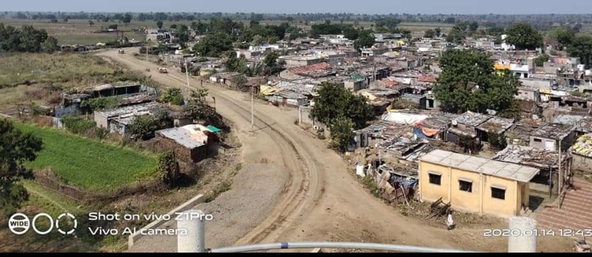

Sawargaon are not very>> devoloped village in hadgaon,compare to other villages.in this village there are not any proper service for people,like:roads,drinking of water,toilets,etc..
For this situation of sawargaon there are many factors are reasonable. There is one big issue which is Couraption. couraption are very big problem in all india.but in sawargon couraption are very affected.we can say
Above are some flops scheme in village.some are helpful for some people but all was not be affected.that's why scheme will be flops.

From some distance of sawargaon there are Limbgaon are situated.which is well devoloped village. Limbgaon have only 1000-2000 population.therefore they have their government hospital.But,in sawargaon have 5000-6000 population, therefore they have not any "government health servent".Now on this situation you can understand reality of sawargaon.
We also know sawargaon is a big village so, obviously they have more and well devoloped road's,but they have not any well build road.governmentare launched many scheme for roads. but there is no any scheme are not be affected".
some others fact are depending on sawargaon which is a "dirty politics!".In this village many more politics are incremented so this is big fact.If any educational person want's to change the situation of village the some badminded will be goes there and standsto oppsite of that person,so that....
We hope sawargaon will be devoloped and become a smart village. 
we also know situation of sawargaon.On the basis of that we can guess aboutcommunication system of sawargaon.Communication system are veey weak in this village. they was not preffered proper road since 2018,but after some time they got some devolopment about raods and other issues.
because some government scheme are implemented in this village for this scheme they got some roads other things.but some of them roads are very weak. they did not use proper material.by the east side the village they have small highway the goes to Tamsa. from same oppsite direction they have another highway which goes to Ardhapur.from this side another highway which goes to the Dongarkada.
this village have bus servise which are provided by Nanded bus department. which are very useful for all people in this villge.

We also disccused about water level of this village. the level of water are changing with the naturality,some year ago they have more much level of water but after some time they was decremented by very fast.in this village have big dam which store more water which water are very helpful for allthis peple in this village.
in the summer when need of water are increased then water level goes to very low that time this time big dam are very helpful for all people they goes more water to all peoples.about this dam one very popular story are famous, i hope which will you read .but the situation of drinking water are very poor.